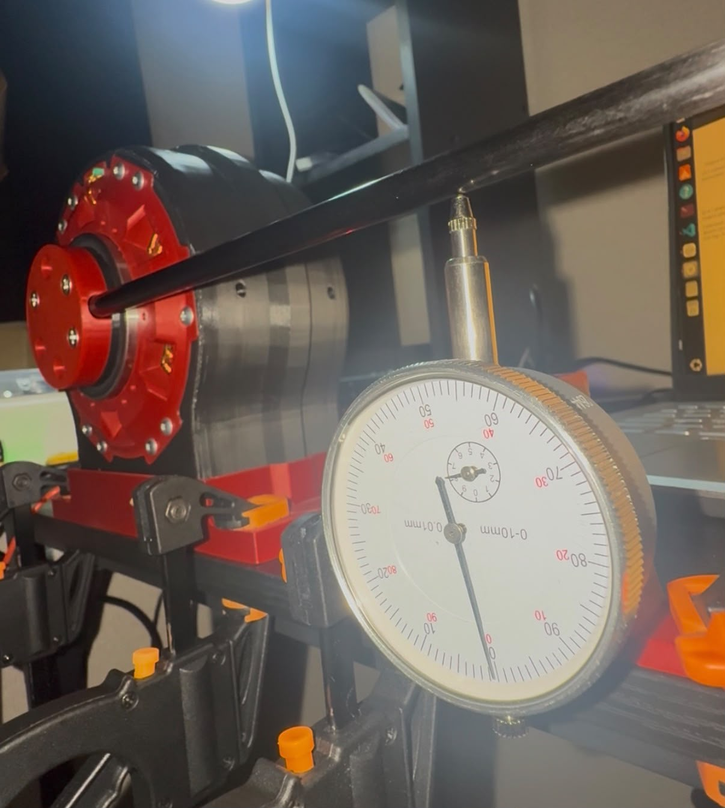
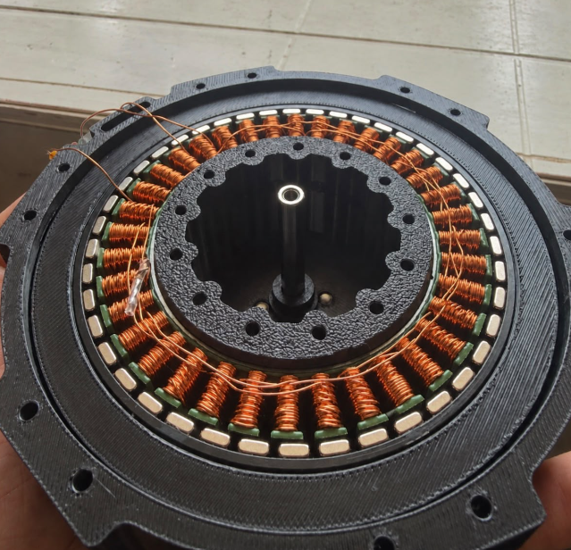
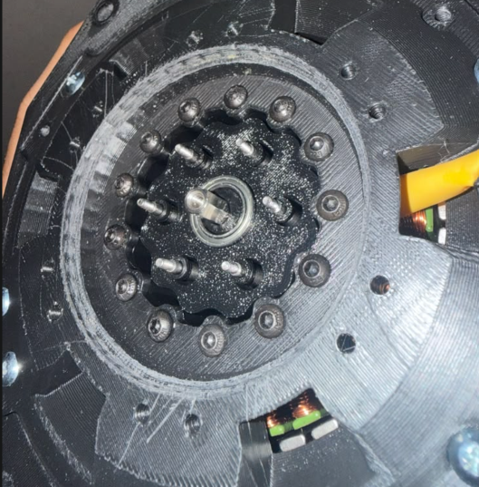
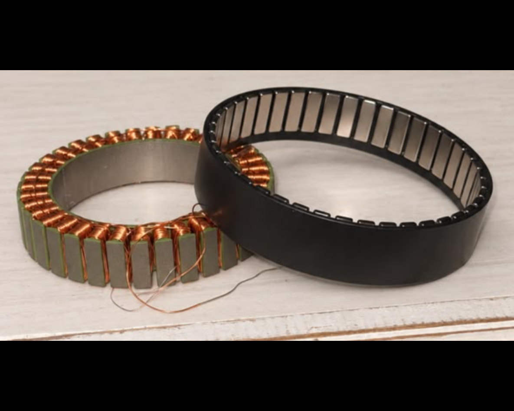
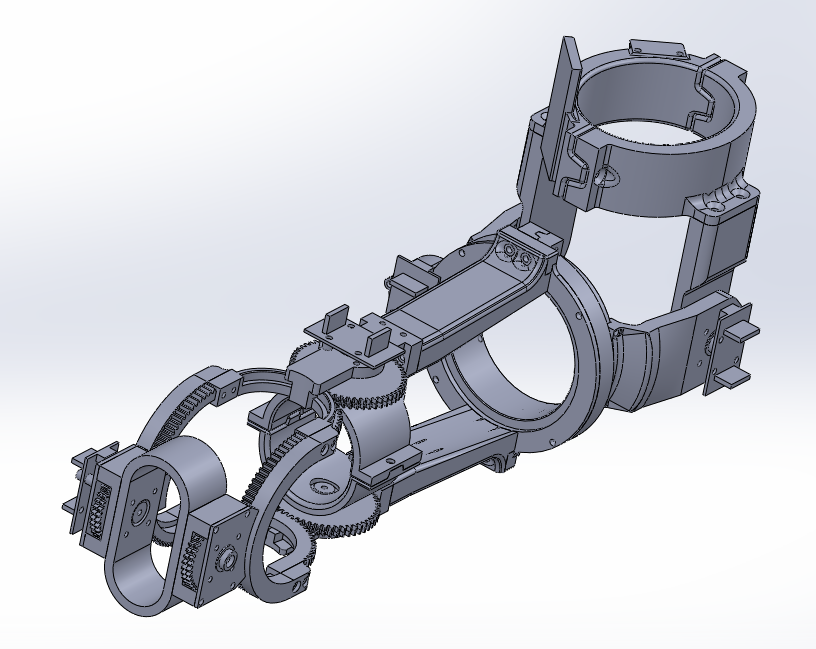
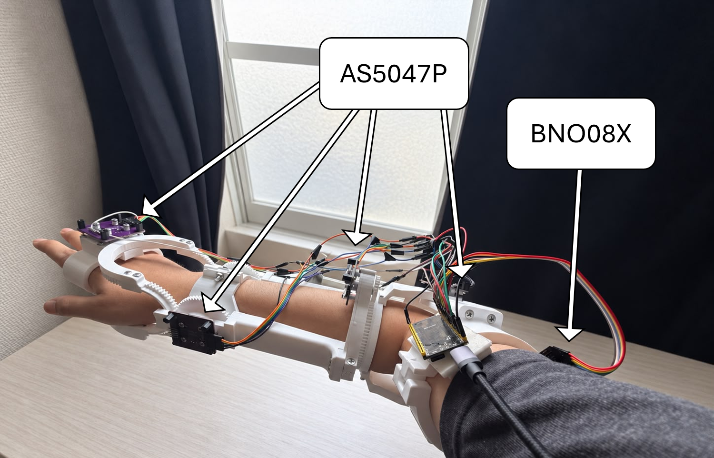
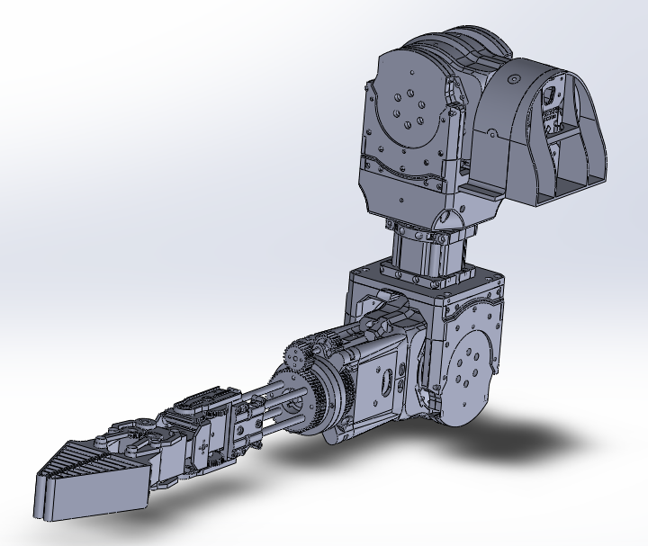
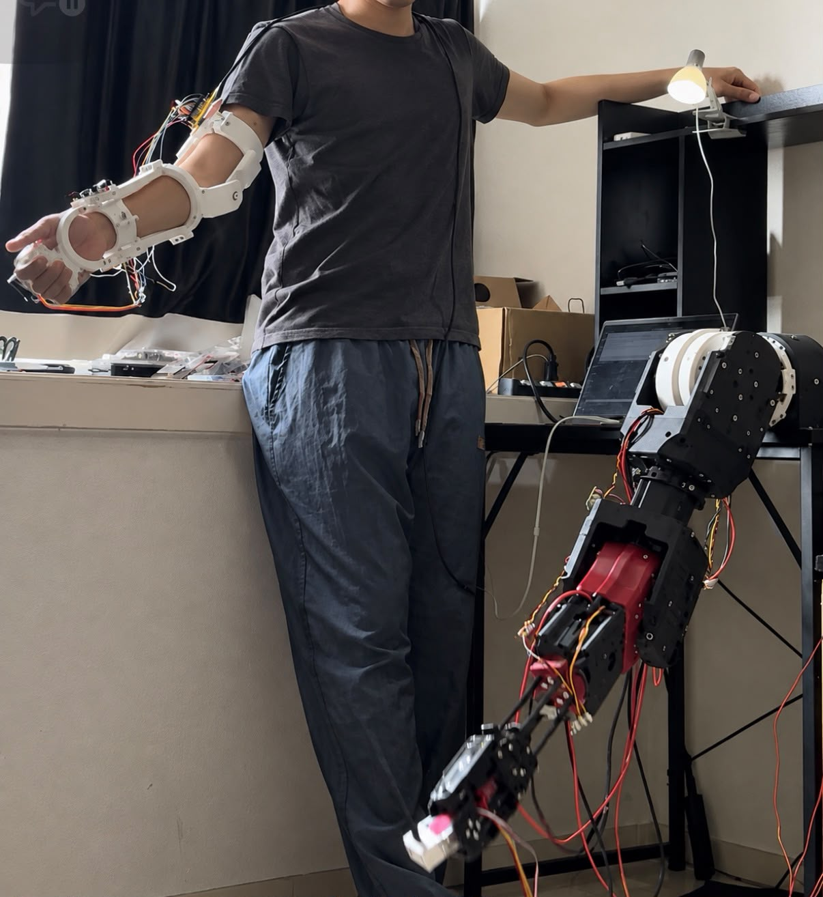
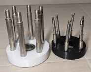

Actuator Design & System Integration
Custom BLDC–Cycloidal Actuators & Teleoperated Robotic Arm
Custom BLDC–cycloidal actuators, a wearable controller, and a teleoperated arm with five arm DoF and two wrist DoF.
Overview
Designed and built compact BLDC–cycloidal actuators, a wearable encoder-and-IMU master controller, and a robotic arm with five arm DoF and two wrist DoF.
1. Custom Cycloidal Actuators
Actuator Architecture
Integrated a frameless BLDC motor, cycloidal reducer, shafts, bearings, and magnetic encoder within a custom housing.
*Thicker structural sections compensate for the limited stiffness of the 3D-printed components.
Component color key: Grey: Housing & Structure · Green: Bearings · Cyan: Rotor · Red: Stator · Purple: Output Assembly · Pink: Cycloidal Discs 1 & 2 · Brown: Eccentric Shaft

Control & Motion Testing
Demonstrated high-speed rotation with minimal visible runout. A preliminary dial-indicator return test measured approximately 0.05 mm deviation at a 200 mm radius; more formal testing remains necessary.

Cycloidal Transmission
Designed a cycloidal reducer housed inside the rotor for compact packaging, with a 12:1 ratio to balance torque amplification and backdrivability.



2. Wearable Master System
Master Mechanism
Designed a wearable linkage to capture shoulder, elbow, forearm, and wrist motion for teleoperation, with an open-center, two-DoF wrist allowing hand passage.

Encoder & IMU Sensing
Four magnetic absolute encoders capture elbow, forearm, and wrist motion; an IMU estimates upper-arm orientation for shoulder tracking.

3. Seven-DoF Slave Arm
Arm Architecture
Built a 3D-printed structure reinforced with carbon-fiber tubes, integrating five custom BLDC actuators and two wrist servos.

System Integration & Testing
Demonstrated wearable master–slave teleoperation, gravity compensation, and motion recording/playback.

An Interesting Design Failure
Despite negligible free play, the output exhibited undesired elastic angular deflection under load. Inspection identified output-pin bending as the source of torsional compliance, prompting an upgrade to larger-diameter pins.

What Is Next?
Integrate the tendon-driven compliant robotic hand (Project 5) for teleoperated pick-and-place testing.